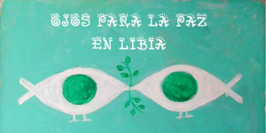

A la luz de los acontecimientos vividos en Libia durante los últimos meses, que se han traducido en una agresión al pueblo libio, a su presente, a su futuro y a su autodeterminación; que ha supuesto prácticamente la destrucción de su avanzado estado de bienestar a manos de los gobiernos de la coalición agresora liderada por la OTAN, amparados por una ambigua y sin sentido Resolución del Consejo de Seguridad de la ONU (die 1973) ejecutada por diversos gobiernos europeos, americanos y árabes,
nosotros acusamos
a todos los gobiernos de la Alianza, pero también a los representantes políticos electos, que lo han permitido, a todos los partidos que han votado a favor en los diferentes parlamentos y a quienes han manipulado la opinión pública para evitar sus movilizaciones de protesta,
weil:
Han utilizado a la ONU mediante la Resolución 1973, para dar cobertura al uso de armas, medios, recursos humanos y conseguir un ataque encubierto, bajo la mentira de pretender evitar que el Gobierno libio usara la aviación contra sus opositores armados desde el inicio del conflicto o contra objetivos civiles pero que, en realidad, ha servido para que la OTAN bombardee hospitales, Universitäten, campos de cultivo, barcos de pesca, viviendas, depósitos y canales de agua, rebaños, colegios y aldeas, con un altísimo número de bajas entre la población civil.
Han excedido los límites fijados por las Naciones Unidas, que en el texto de dicha resolución impedían explícitamente la invasión terrestre, en tanto que existen numerosos testimonios que avalan la presencia de fuerzas de la OTAN supervisando en tierra el desembarco de soldados y armamentos o prestando servicios de inteligencia militar a los protagonistas de la sublevación.
Han vulnerado claramente lo estipulado en dicha resolución, que no contemplaba el retirar a Muammar Al Gadafi de un puesto político que no tiene, ni su caza como un forajido, ni el desmantelamiento de su sistema político asambleario, ni el reconocimiento del Consejo Nacional de Transición como gobierno de Libia, como tampoco asumía el despliegue de fuerzas aéreas, navales y terrestres, en una operación que sobrepasa claramente los topes establecidos por el Consejo de Seguridad.
Han seguido usando dicho organismo supranacional como una formidable coartada para el reparto del botín: oro, petróleo, agua y uranio, que suponen los principales recursos energéticos y vitales de la región, que ahora administrará un nuevo Gobierno pretendidamente democrático y de inspiración islámica, pero con una fuerte dependencia de quienes han financiado esta formidable operación militar.
Han falsificado la realidad de Libia, presentando una imagen estereotipada de dicha nación, más allá de las denuncias hacia el Gobierno que los libios se han dado. So, se sigue insistiendo en la pobreza y atraso de Libia cuando en realidad, hasta este conflicto, presentaba el PIB más alto de África, con el índice del Programa de Naciones Unidas para el Desarrollo más elevado de dicho continente, una tasa de alfabetización superior al 80 por ciento, pleno empleo y 3,000.000 de inmigrantes extranjeros.
Han prescindido de los mecanismos que fija el Estado de Derecho y el Derecho Internacional para proceder a dar caza y captura al líder Muammar Al Gaddafi, así como a sus familiares directos.
Han diseñado una hoja de ruta que permite la intervención del primer mundo en África, y han establecido, en el caso de Libia, un sistema que garantiza en el futuro la explotación de sus riquezas y de su pueblo por Estados ajenos a los intereses de la población.
Es por todo ello
que reclamamos una acción decidida de los ciudadanos para conseguir que esta agresión imperialista se detenga y que dejen de masacrar Libia y, al mismo tiempo, impedir que se extienda a otros enclaves del Magreb y del Máshreq, así como a Latinoamérica, en una hoja de ruta de impredecibles consecuencias. También en esa encrucijada del mundo y del tiempo, están en juego nuestro propio futuro, nuestros valores democráticos y el descrédito creciente de nuestra propia soberanía popular. Más temprano que tarde, tendremos que pedir responsabilidades penales y civiles a los autores e inductores de estas masacres.
que invitamos a las personas de buena voluntad a participar con nosotros en el descubrimiento de lo que realmente sucede en Libia, y a movilizarse en contra de ésta y de todas las guerras.
PLATAFORMA OJOS PARA LA PAZ
EN LIBIA
- Leonor Massanet, farmacéutica, psicóloga, blog leonorenlibia
- Rafael Fernández Veiga, empresario
- Flavio Signore, Journalist, director de documentales, director de cine
- Xosé Currás, Journalist, empresario
- Juan José Téllez, escritor y periodista
- Carlo Frabetti, Schriftsteller, académico de la de Ciencias de Nueva York, Presidente de la Asociación contra la Tortura
- Iñaki Errazkin, Journalist, Schriftsteller, Dichter
- Purificación González de la Blanca, cofundadora de Los Verdes, abogada, Schriftsteller
- José Antonio Barroso Toledo, ex Alcalde de Puerto Real, ex Diputado
- Chus Garrido Romero, profesora
- Alejandro Zapico Robledo, Journalist, ex corresponsal de guerra en Iraq y Afganistán
- Andrés Vázquez de Sola, Journalist, Schriftsteller, autor del logo OJOS PARA LA PAZ
- Diego Cañamero, Portavoz Nacional del SAT (Sindicato Andaluz de Trabajadores)
- Eduardo Albaladejo Manzanares, Journalist, Editor
- Josep Desumvila Masso, administrativo
- Marc Viader i Pericas, abogado, Schriftsteller
- Manuel Almisas Albendiz, médico, profesor
- Ketty Castillo, Journalist, Schriftsteller
- Manuel Valero Yáñez, abogado, Schriftsteller
- José Ramón Cervera Grau, ferroviario
- Mario Casartelli, Schriftsteller, Dichter, cantautor. Paraguay
- Victor Javier Sanz Fernández, Journalist, Proyecto Hermes
- Miguel Angel Rincón Peña, monitor de educación especial, Dichter
- Yolanda Ávalos Parada, arquitecta. Méjico
- José María Barreiro España, Journalist
- Pello Eizagirre Portillo, protésico
- Esmérida Marcel Bozal, Journalist. Kuba
- Melvis Martínez Cosme, profesora y periodista. Kuba
- Nuria Barbosa León, Journalist. Kuba
- Nazanin Armanian, Journalist
- Juan Carlos Granizo García, empleado público, exconcejal
- Concepción Cruz Rojo, doctora en Medicina, profesora Universidad de Sevilla
- Juan Miguel León Moriche, Journalist
- Ramiro Pinto Cañón, Schriftsteller, filósofo
- Pedro Jiménez Miguel, profesor, filósofo
- César Vila Antoni-Candela, concejal
- Pascual Serrano, periodista cofundador de la Red de Intel. y Artistas en Defensa de la Humanidad
- Carlos Tena, Journalist, Schriftsteller, crítico musical
- Pepe Escobar, Journalist, Schriftsteller
- Josu Ramos Sánchez, comerciante
- Antonio Maira, capitán de fragata de la Armada española, exmiembro de la U.M.D., analista político en medios alternativos
- Gloria Casari, psicóloga. Frankreich
- José María Fernández Criado, jubilado
- Pilar García Sánchez, jubilada
- Red Roja, Organización
- Ecología y Debate, Organización
- Carmen Pino Montes, empresaria
- Pavel Fuchs, profesor. Rusia
- Alberto Pradilla, Journalist, Schriftsteller